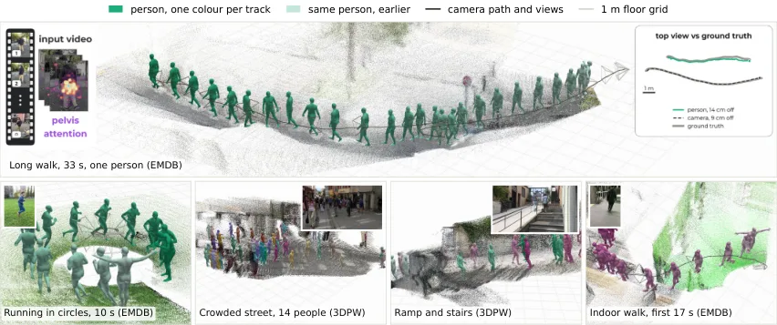
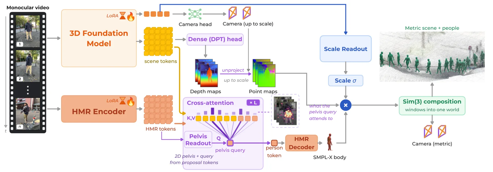
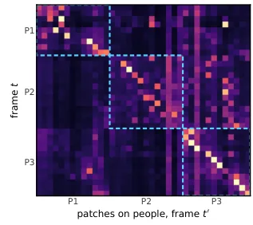
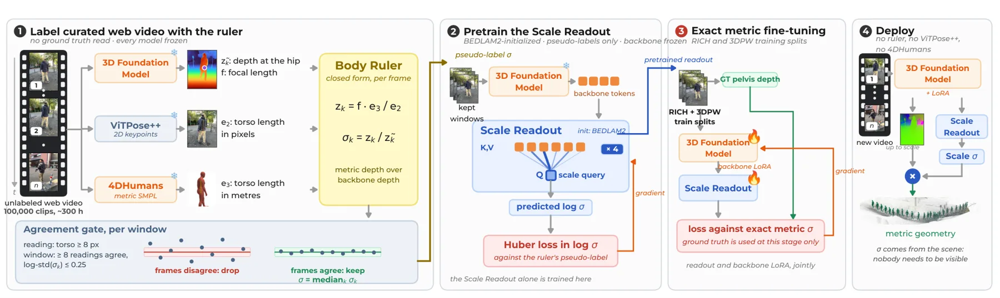
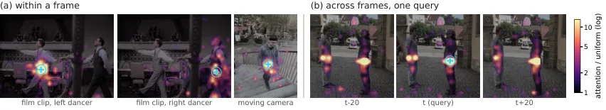
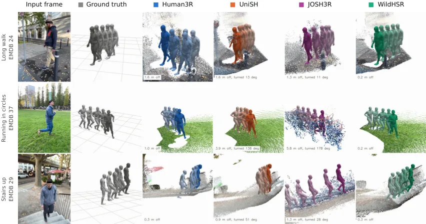

WildHSR：从 3D 基础模型得到米制前馈式 4D 人—场景重建
WildHSR: Metric Feed-Forward 4D People-Scene Reconstruction from a 3D Foundation Model
把“人”当作离线标尺给上尺度 3D 基础模型的场景 token 学出米制换算，再从冻结 backbone 的中间层 query-key 特征里读出人物身份做关联，从而在无外部尺度网络、无独立跟踪器的情况下做前馈人—场景重建。
trajectory error
median multiplicative scale error
throughput
作者、单位与技术谱系 · Research context
作者与单位
研究脉络
- VGGT 系列 3D 基础模型（Wang et al., 2025a；Wang et al., 2026）方法基座关系：本文在其“只到尺度”的输出上学习米制换算，并借用其 register token 读尺度[arXiv 官方 HTML v1]
- Multi-HMR（Baradel et al., 2024）方法基座（人物分支）关系：提供逐帧多人 SMPL-X 提议，本文在其上挂 0.75 M LoRA 并改从骨盆读取人体[arXiv 官方 HTML v1]
- HAC（Yang et al., 2025）上游方法（机制最接近）关系：同样用人体网格恢复的米制深度做标尺，但把标尺留在推理环节[arXiv 官方 HTML v1]
- Human3R / UniSH / SHOW / GUSH3R（Chen et al., 2025b；Li et al., 2026；Shi et al., 2026；Abe et al., 2026）上游方法（同期竞品）关系：同为“在几何基础模型上接人体解码器、一次前馈重建人—场景”的路线，差异在人体分支读取位置与尺度来源[arXiv 官方 HTML v1]
合作网络
- 论文署名与单位WildHSR 论文署名作者 → 滑铁卢大学视觉与图像处理实验室关系：署名单位[arXiv 官方 HTML v1]
- 骨干依赖WildHSR（场景与相机分支） → VGGT 系列 3D 基础模型（Wang et al., 2026）关系：明确技术依赖[arXiv 官方 HTML v1]
- 标尺链路上的第三方模型人体标尺伪标签 → ViTPose++-H（Xu et al., 2024）与 4DHumans（Goel et al., 2023）关系：明确技术依赖[arXiv 官方 HTML v1]
- 监督数据依赖米制微调阶段 → RICH-train 与 3DPW-train 官方划分关系：明确数据依赖（官方划分）[arXiv 官方 HTML v1]
作者、单位、数据集划分与依赖关系均来自论文作者块、方法章节与可复现性声明；跨团队关系除“同为竞品并被列为对照”这一引用事实外没有公开证据，未发现可证的共同署名或合作项目，因此不作补写。
方法本质拆解 · What actually changed
是不是微调？
是“适配 + 训练读出”，不是训练新的大模型。VGGT 系列主干与 Multi-HMR 都保留官方发布权重，只挂 0.75 M 量级的 LoRA 与小型读出模块；Scale Readout 先在 BEDLAM2 合成数据上初始化，再用网络视频伪标签预训练，最后用 RICH-train 与 3DPW-train 的精确米制标签微调读出与主干 LoRA，EMDB-2 全程留出。身份投影用监督对比损失训练，再通过软分配损失微调，骨干始终冻结。
有没有额外约束？
约束作用在三个位置：尺度上要求逐窗口预测 s（因为主干每次推理都重新归一化），相似变换只施加于相机中心、点图与骨盆平移而人体尺寸不缩放；关联上用一个时间相关运动门限把超出范围的真实配对判为无效，并用带垃圾箱的 Sinkhorn 允许人在缺失帧后重新接上而不是强行匹配；场景上加入“支撑脚与重建地面一致”的接触正则，把最低身体顶点离地从中位的 9.8 cm 压到 1.1 cm。
推理/后端到底做了什么？
推理是逐窗口前馈：100 帧窗口、步长 50、至少 8 帧共享，一次前向给出相机、深度与 token，读出给出 s、骨盆位置与身份描述子；跨窗口用弦均值旋转加闭式求解的相似变换按时间顺序组合，累计相似变换除以几何均值保住整体尺度。关联是固定步的：Sinkhorn 的软分配只在训练期可微，推理期用匈牙利一对一硬化，出生/丢失/记忆更新都是解析规则且不回传。没有测试期梯度拟合、没有全局 BA、也没有把渲染结果喂回去迭代。
方法本质是什么？
本质是把主干里“已经存在但没有被声明”的两个量读出来：米制尺度通过“人当标尺”的伪标签教给场景 token，身份通过中间层 query-key 的跨帧对应读出。它没有做的是：不引入米制原生骨干、不引入度量深度先验、不训练独立跟踪器、不做测试期优化；代价是尺度依赖主干每次归一化的行为必须逐窗口预测，且身份质量仍受遮挡与交互限制。
输入=单目视频窗口（外加离线阶段用于造伪标签的人体姿态与 2D 关键点）；改变的位置=场景 token 的米制换算 s 与骨盆附近中间层特征的读出；动作=人体标尺伪标签预训练 + 精确米制微调 + 解析关联与 Sim(3) 组合；直接效果=无外部尺度网络与跟踪器下的米制人—场景重建，EMDB-2 轨迹误差 0.9、RICH 尺度误差 7.2%、单卡 10.1 fps。

动机与问题Motivation
动机与问题
论文把问题拆成两个独立缺口：第一，单目几何存在全局尺度歧义，而“只到尺度”的模型每次推理都会把窗口归一化到任意单位，于是逐窗口独立的缩放会扭曲长序列轨迹；第二，基础模型的几何输出不携带人物身份，它不会告诉你这一帧里的身体在后面哪一帧还是同一个人，身份切换会把不同人缝成一条轨迹。既有做法把这两件事都放到表示之外解决——米制尺度来自米制原生 backbone、米制深度先验或合成米制监督加深度教师，身份来自外部检测与跟踪器，代价是引入额外模型、额外监督源或额外的序列处理阶段。作者因此提出一个更窄但更有意思的问题：能否只用同一份上尺度表示同时支撑这两件事。作者还用两条上游证据支撑“中间表示可能已含对应”的假设：自监督 ViT 的注意力会浮现分割，成对几何模型的注意力能在无训练下把运动物体与静态场景分开，而 VGGT 作者也报告过其 register token 可解码出包括米制尺度在内的辅助量。
方法Method
方法总览
主干是一个 3D 基础模型（VGGT 系列，VGGT 的后续版本，用小型 LoRA 做米制迁移），它一次前向输出逐帧相机（含焦距）与深度，反投影得到点图，并保留用于解码这些输出的 token；一次前向的所有结果都正确到一个未知尺度 s，且该模型每次推理都会重新归一化，所以 s 必须逐窗口预测而不是在序列上池化。人物分支用 Multi-HMR（加 0.75 M LoRA）给出每帧的 SMPL-X 提议，一个轻量 Pelvis Readout 从 HMR token 产生 2D 骨盆位置与人查询，再与 VGGT 场景 token 及帧内 HMR token 做交叉注意力解码出米制人体；Scale Readout 从 backbone 的相机与 register token 回归 log 尺度；身份读出把第 13 层 query-key 向量在骨盆附近池化后投影成 128 维单位描述子，与预测的米制骨盆位置、提议置信度一起构成分配代价，经带垃圾箱的 Sinkhorn 软分配与匈牙利匹配硬化为一对一；最后用 100 帧窗口、步长 50 帧、至少 8 帧共享的设定逐窗口前馈预测，解析关联与 Sim(3) 组合把窗口拼成一个连续米制世界。
关键技术细节
尺度监督的构造是全文最巧的部分：一条“人体标尺”用 ViTPose++-H 给出肩中点到髋中点的图像平面跨度，用 4DHumans 给出已摆姿态的米制躯干平面内跨度，再配合 backbone 的焦距与估计深度，在局部弱透视近似下写出尺度读数的闭式表达，因此不需要任何米制标签或传感器；置信检测被过滤后，一个窗口至少需要八条读数，其伪标签取合格帧与人员的读数中位数，作者明确说明该一致性检验只验证一致性、不验证绝对正确。这些伪标签先在 10 万段精选网络视频（约 300 小时）上预训练 Scale Readout（backbone 冻结、log 空间 Huber 损失），再用 RICH 与 3DPW 官方训练划分的精确米制目标微调读出与 backbone LoRA；推理时标尺、教师与可见人员全部缺席。身份侧的探针只用未修改的预训练 backbone（网格模型、融合与适配器全部移除），逐头在骨盆邻域池化第 13 层的 query 与 key 向量、拼接后算出描述子；骨盆作为锚点是因为它是身体根节点、运动更平滑，且避免了头部锚点约若干厘米量级的朝向敏感力臂。关联代价三项都落在 [0,1]，超出时间相关运动门限的真实配对判为无效；Softmax/Sinkhorn 只用于训练期软分配损失，推理期的匈牙利选择、置信门控的记忆更新、出生与丢失决策都不参与反传。窗口组合侧：相对旋转取共享相机朝向的弦均值，在米制相机中心上闭式求解，若共享对应少于八个或中心化相机轨迹退化则沿用上一次累计相似变换；累计相似变换除以几何均值以保住序列整体米制尺度，相似变换只作用于相机中心、点图与骨盆平移，人体尺寸不被缩放，测试期不优化任何网络或场景参数。

实验Experiments
实验设置
评测沿用被比较方法已发表的 EMDB-2 25 段序列协议与 RICH 协议，并在 3DPW 留出划分上补测局部人体精度。指标分三类：WA-MPJPE 用相似变换对齐，W-MPJPE 只对齐前两帧，RTE 仅用旋转与平移对齐轨迹、因此保留尺度误差——论文强调这是它相对 MPJPE 类指标更能暴露米制尺度问题的原因。身份关联在同一批固定 Multi-HMR 提议与人体上，用 13 段双人 3DPW 测试序列比较 IDF1、HOTA、ID 切换数、碎片数与 MOTA，分配阈值在四条验证序列上选定；作者明确说明该组件实验不能代替端到端管线评测。运行时在单张 RTX PRO 6000 Blackwell 上，用 EMDB-2 24_outdoor_long_walk 的前 60 帧、两次预热三次计时、不含模型加载测得。尺度路径的阶段性误差在留出 RICH 上单独报告，场景几何在 7Scenes 上用同一尺度对齐协议比较点图精度。
实验数字与比较
① EMDB-2（表 1）：WildHSR 为 WA 66.3 / W 193.6 / RTE 0.9；优化式最优 JOSH 为 68.9 / 174.7 / 1.3；前馈方法中 Human3R 112.2 / 267.9 / 2.2、UniSH 118.5 / 270.1 / 5.8、SHOW 109.1 / 262.3 / 2.1、JOSH3R 220.0 / 661.7 / 13.1、WHAM 135.6 / 354.8 / 6.0；相对各列最优为 −3.8% / +10.8% / −30.8%，即轨迹指标领先、W 指标受优化式方法压制。② RICH（表 2）：WildHSR 73.2 / 163.1 / 2.7，Human3R 110.0 / 184.9 / 3.3、UniSH 118.1 / 183.2 / 4.8、SHOW 107.3 / 172.7 / 2.2、优化式 JOSH 89.0 / 132.5 / 3.0、TRAM 127.8 / 238.0 / 6.0；相对最优 −17.8% / +23.1% / +22.7%，中位乘性尺度误差 7.2%。③ 局部人体（表 4，留出 3DPW，14 关节）：PA-MPJPE 38.7、MPJPE 65.2、PVE 74.4，优于 SHOW（41.0 / 67.7 / 78.7）与 Human3R（44.1 / 71.2 / 84.9）。④ 关联（表 5，13 段双人 3DPW）：投影身份＋运动＋置信度给出 IDF1 82.1、HOTA 74.5、ID 切换 39、碎片 73、MOTA 96.5；原生 Human3R 为 87.4 / 72.3 / 1682 / 87 / 87.1，单用运动＋置信度的动态规划为 66.9 / 56.9 / 97 / 77 / 87.5，仅用原始 VGGT query/key 为 51.8 / 53.4 / 8065 / 861 / 51.7——说明“投影读出＋运动”组合才是把切换数从千级降到几十级的原因。⑤ 人—场景自一致性（表 10，全部 25 段 EMDB-2）：脚—地面间隙 3.6 cm（Human3R 12.7、UniSH 15.5），世界尺度比 0.99（尺度误差 6%，Human3R 1.03/15%、UniSH 0.47/73%），相机误差 0.13 m（Human3R 0.20、UniSH 0.98）。⑥ 尺度阶梯（附录 D，留出 RICH 中位乘性尺度误差）：人体标尺伪标签 14.1% → 标尺预训练读出 8.4% → 精确米制微调 7.2%。⑦ 运行时（附录 B）：参数量 1.52 B、峰值显存 11.22 GB，主分辨率端到端 10.1 fps；长视频上无对齐的中位距离误差 14.1 cm，近邻区判断在 100% 帧上正确。
消融/失败边界
训练数据消融（表 3，EMDB-2，WA / W / RTE）清楚地分层：只用合成数据 BEDLAM2 得到 182.2 / 1009.2 / 11.3；加入精选野外视频伪标签后改善到 136.7 / 418.6 / 4.63；保留 BEDLAM2 与精确 RICH+3DPW 监督但去掉野外伪标签阶段，则为 116.3 / 255.9 / 3.7；三段齐备得到 66.3 / 193.6 / 0.90。这组数字说明伪标签阶段提供了精确标签之外的信息（相对“无伪标签”在 WA 上改善约 43%），而不是仅仅充当初始化。附录 G 的组件替代：把最终两段式 Scale Readout 换成“只用合成米制真值训练的最优回归器”会退化到 182.2 / 1009.2 / 11.3（即与合成基线相同），加入场景接触项则从 66.3 / 193.6 / 0.90 变为 72.2 / 203.4 / 0.91——接触项主要改善身体—地面物理一致性（最低身体顶点离地由 9.8 cm 降到 1.1 cm，仅 1.2% 帧下穿超过 5 cm），对 W 与 RTE 几乎无影响。失败边界有三处可量化：① 遮挡与截断（附录 J）在六段 EMDB-2 上，WildHSR 在 30 个“片段×条件”组合中有 29 个误差更低（干净 63.6 对 89.1、砍腿 119.5 对 238.1、运动遮挡物 71.3 对 181.6、整帧丢失 183.6 对 254.4），但整帧丢失最严重，因为相机与尺度是跨窗口共享的；② 测得的失败模式（附录 K）包括爬楼时脚底沉入重建台阶、膝部屈曲误差偏大、以及 RICH 波比跳中第 100–149 帧完全没有重建出人体并在恢复后换了一个新轨迹 ID（这一组具体数值在官方 HTML 中被公式渲染吞掉，待核验）；③ RICH 的 RTE 分母是中位位移约 0.2 m，微小轨迹误差会被放大，因此该列结论不宜单独引用。
局限与迁移Limitations & Transfer
局限与待核验
作者明确承认的限制有三条：身份在人物交互与遮挡下会变弱，且该身份机制是否专属于“人”并未验证；窗口组合是离线的（需要完整视频再组合，不是因果在线系统）；以及 RICH 的训练数据配方在各方法间可能不同，因此表 2 是评测划分一致而非训练一致的对照。作者还主动声明探针的两点边界：只对人物做过测试，若模型同样能匹配其它运动表面也不算反例；探针本身不能证明对应关系一定改善跟踪，表 5 的组件实验固定了上游提议与人体、也无法隔离端到端效果。我们的待核验项：① 代码、模型与输出声明“将公开”但本次未取得，可复现性暂不可验证；② 长视频与检索探针里的多处具体数值（探针命中率、层 11–15 的检索精度、注意力抬升倍数、失败模式中的厘米数与屈曲误差）在官方 HTML 中被公式渲染吞掉，需回到 PDF/TeX 才能引用；③ 表 6 各方法的运行配置不同（分辨率、模型数），10.1 fps 不宜与其它系统直接比值；④ 论文未报告人体标尺在儿童、极端体型或服装遮挡下的偏差，而这一偏差会直接传导到全局尺度（作者已指出伪标签可能继承米制人体教师的系统性误差）。
与你研究路线的关系
可迁移模块有四处。① “用已知尺寸的物体当离线标尺、给上尺度模型生成伪标签，再在部署时丢掉标尺”是一条通用的尺度锚定套路，与我们用已知控制点、GNSS 先验或标定基线给学习几何定尺度的做法同构，可以直接把“人”替换成我们场景里可测的对象做最小实现。② 从冻结 backbone 的中间层 query-key 特征读出对应关系来做数据关联，是在没有额外跟踪器时获取对应代价的轻量做法；我们的关联链路目前靠描述子加运动学门控，值得做一次“中间特征读出 vs 描述子”的对照。③ “固定步解析关联 + Sim(3) 组合、测试期不做任何优化”是实时系统里可复用的折中，尤其是用几何均值归一化以保住序列整体尺度的技巧。④ 一步实验：在同一 backbone 与同一提议质量下，比较显式跟踪器与中间特征读出在遮挡/交互场景下的 ID 切换数与 HOTA，量化“免跟踪器”这条路的代价；顺带复现表 3 的四段训练阶梯，确认伪标签阶段在我们数据上是否也有独立增益。明确的停留点：本文不做 SLAM 后端、不做回环与全局平差，也不处理 IMU/GNSS，是重建侧模块；它能与我们的状态估计互补的地方在“尺度先验的生成方式”与“跨窗口关联的鲁棒性”。







